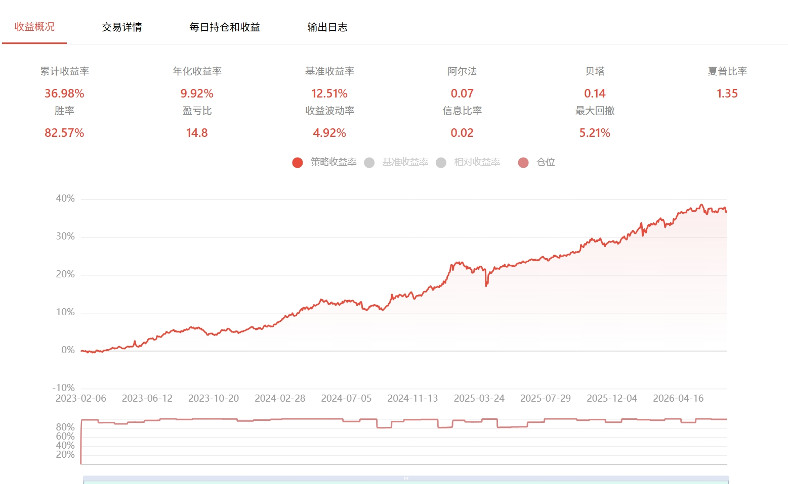

一、等权、均值方差之外的第三条路
做资产配置，最朴素的做法是等权（1/N）：几个资产平均分配资金。但这里有个容易被忽略的陷阱——资金等分不等于风险等分。经典例子是股债 60/40 组合：表面上股票占 60% 的钱，看起来股票没有"压倒性"地多，但股票的波动率通常是债券的 3~4 倍，算下来组合几乎全部的风险波动都来自股票，债券的存在感在风险层面几乎为零。你以为自己做了分散配置，实际上还是在赌一个资产。
另一条路是均值-方差最优（Markowitz）：给定风险约束下最大化预期收益。问题是它极度依赖收益预测，而收益预测恰恰是金融里最不可靠的输入——预测误差会被优化器放大成极端权重，这是教科书级的痛点。
风险平价（Risk Parity）提供了第三条路：不猜收益，只看风险，让每个资产对组合总风险的贡献相等。它不能保证最优，但换来了一个很朴素的优点——不需要一个你大概率会猜错的收益预测。

图：风险平价下，各资产的风险贡献被拉平，配置权重会向低波动资产倾斜
二、地基：组合风险是一个一次齐次函数
设权重向量 w = (w₁,...,w_N)ᵀ，资产协方差矩阵 Σ，组合方差与波动率：
风险平价能立住的第一块地基，是一个容易被忽视的性质：σ_p(w) 是 w 的一次齐次函数。把权重整体放大 λ 倍，风险恰好也放大 λ 倍：
由欧拉齐次函数定理，一个 k 次齐次函数满足 xᵀ∇f(x) = k·f(x)。这里 k=1，代入得到：
三、边际风险贡献与风险贡献
边际风险贡献（Marginal Risk Contribution）：资产 i 权重每变化一单位，组合风险变化多少。对 σ_p = (wᵀΣw)^{1/2} 求偏导：
∂(wᵀΣw)/∂wᵢ = 2(Σw)ᵢ。
风险贡献（Risk Contribution）：权重乘以边际贡献，代表资产 i 实际占用了多少组合风险：
把上一节欧拉定理的推论代进来验证一下，风险贡献确实能精确加总回总风险，没有遗漏也没有多余：
这一步的意义在于，组合总风险被完美拆成了 N 份，每一份都有清晰的经济含义：资产 i 的权重 × 它对组合的边际风险贡献。有了这个干净的分解，"风险平价"才能被精确定义成一个数学目标，而不是一句模糊的口号。
四、风险平价的目标：等风险贡献
风险平价要求所有资产的风险贡献相等：
展开即 wᵢ(Σw)ᵢ = σ_p²/N，对所有 i 都成立。这是一个非线性方程组——注意 σ_p 本身也是 w 的函数，方程组自己嵌套自己。一般没有解析解，只能数值求解，而且直接迭代求解这个方程组数值上并不稳定。
五、转成凸优化：为什么要引入对数障碍项
Maillard, Roncalli & Teiletche（2010）给出的标准做法，是把上面的非线性方程组转化成一个严格凸的优化问题：
对目标函数求一阶条件，看它是否真的对应等风险贡献：
这正是"风险贡献相等"的条件（差一个 σ_p² 的归一化常数，不影响最终权重解）。对数惩罚项的作用就是把一个多元非线性方程组，转成了有唯一解、能用牛顿法或凸优化库（cvxpy、scipy.optimize）稳定求出来的问题——目标函数是二次项加凹的对数障碍项，整体严格凸，保证解存在且唯一。
六、两个有教学意义的解析特例
抛开数值求解，有两种简单情形可以手推出解析解，能帮你建立直觉，也常被拿来当近似简化用。
特例一：资产两两不相关
此时协方差矩阵 Σ 是对角矩阵，Σᵢᵢ = σᵢ²。等风险贡献条件 wᵢσᵢ² ∝ 1 直接给出：
这就是实践中经常见到的反波动率加权（inverse volatility weighting）。它常被当作风险平价的简化版直接拿来用——但要清楚，这只是风险平价在"资产互不相关"这个特殊假设下的解析解，一旦相关性不能忽略，它就只是个近似。
特例二：只有两个资产（不要求不相关）
这个特例更有意思，因为它不要求资产不相关，却依然能推出干净的解析解。设两资产 w₁+w₂=1，令 RC₁=RC₂：
两边各自展开后，会发现相关系数带来的交叉项 w₁w₂σ₁σ₂ρ 在等式两边完全相同，直接约掉：
反直觉但很干净的结论：两资产情形下，风险平价权重恒为 wᵢ∝1/σᵢ，与相关系数 ρ 完全无关——不管两个资产相关性多高多低，解都长这个样子。这是 N=2 独有的特例，从 N=3 开始，相关系数会真正进入权重解，不能再这样简化。
七、和其他配置方法横向对比
| 方法 | 优化目标 | 特点 |
|---|---|---|
| 等权（1/N） | 资金等分 | 简单，但隐含风险集中在高波动资产 |
| 均值-方差最优 | 给定风险下收益最大化 | 依赖收益预测，对预测误差极度敏感 |
| 最小方差 | min wᵀΣw | 容易集中于低波动/低相关的少数资产，权重常出现极端解 |
| 风险平价 | 各资产风险贡献相等 | 不需要收益预测，天然分散风险贡献；隐含"各资产夏普比率相同"的假设 |
八、风险平价的局限性
- 不利用收益预测信息：风险平价能"仅用风险就求解"，前提是隐含假设所有资产的夏普比率相同。如果资产间夏普比率差异很大，风险平价组合就是次优的——它只在"不知道谁更好"时才是一个合理的默认选择。
- 常需要杠杆：低波动资产（比如债券）会被加权很重，若要让组合达到目标收益/风险水平，往往要对低波动部分加杠杆放大——这正是桥水"全天候"策略的实践做法。
- 协方差矩阵的估计误差：和所有依赖
Σ的方法一样，样本协方差矩阵的不稳定性会直接传导到权重上，维度越高越严重。 - 极端行情下相关性趋同：牛市普涨或危机踩踏时，资产相关性会集体飙升，风险平价预设的"分散风险贡献"恰恰在最需要它的时刻失效。
九、写在最后
风险平价常被一句话带过——"按波动率倒数加权"，这句话在资产不相关或只有两个资产时是对的，但它是结论，不是定义。定义永远是"等风险贡献"，而反波动率加权只是这个定义在特殊结构下的解。把地基（齐次性）、分解（边际贡献→风险贡献）、目标（等风险贡献方程组）、解法（凸优化）这四步理清楚，才不会在资产数变多、相关性变复杂之后，还死守着一个只在特例下成立的公式。
这套骨架不止用在资产层面。把权重 w 换成因子暴露、把协方差矩阵 Σ 换成因子协方差矩阵，同样的推导可以搬到多因子风险模型里做因子空间的风险预算——数学完全一致，只是"风险贡献"的对象从一只只资产变成了一个个风格因子。这是后面会展开的另一个话题。